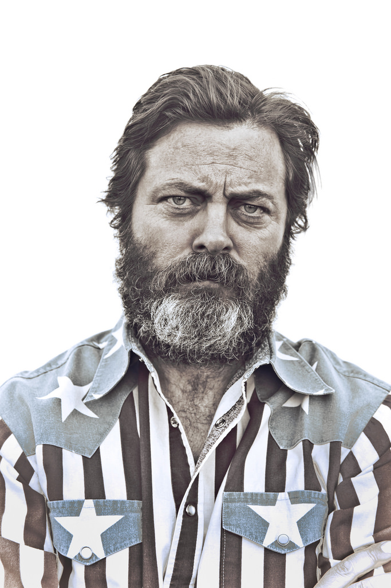
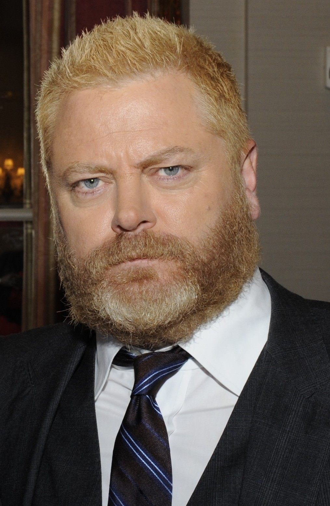
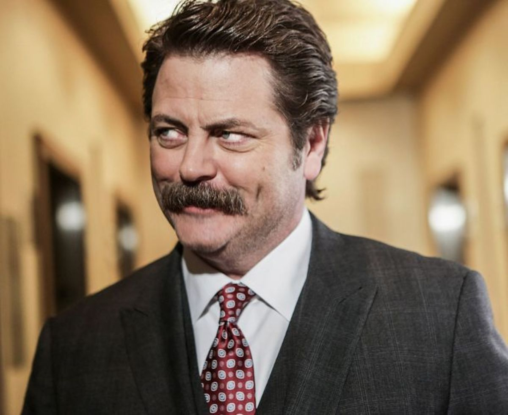
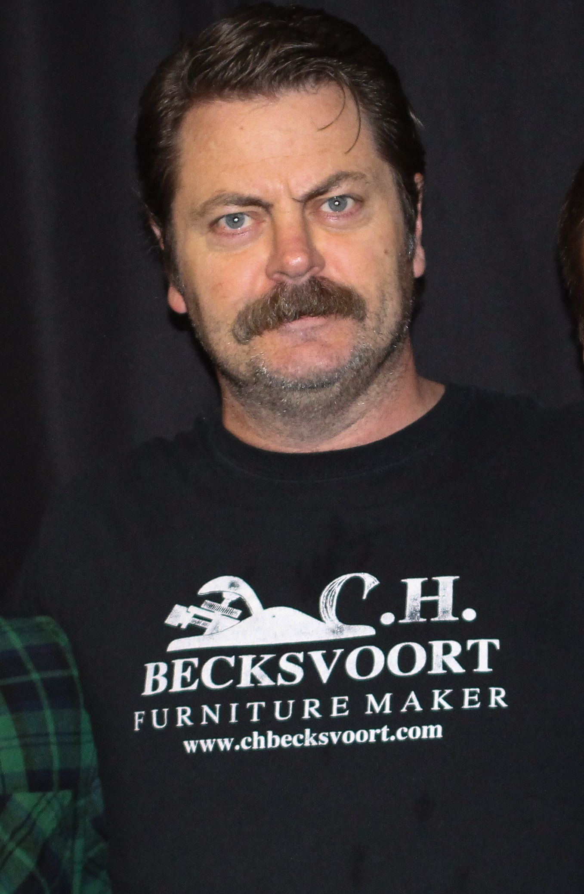

Background
Nick Offerman was born on June 26, 1970 in Minooka, Illinois. He is most recognized for his role as Ron Swanson on the NBC comedy Parks and Recreation. In additon to being prolific actor, he is also a published author and talented woodworker.



